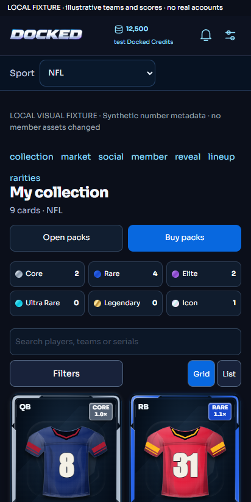
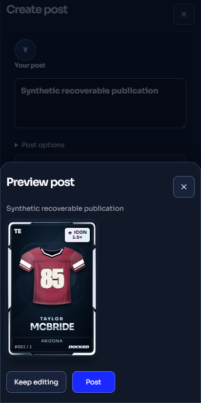
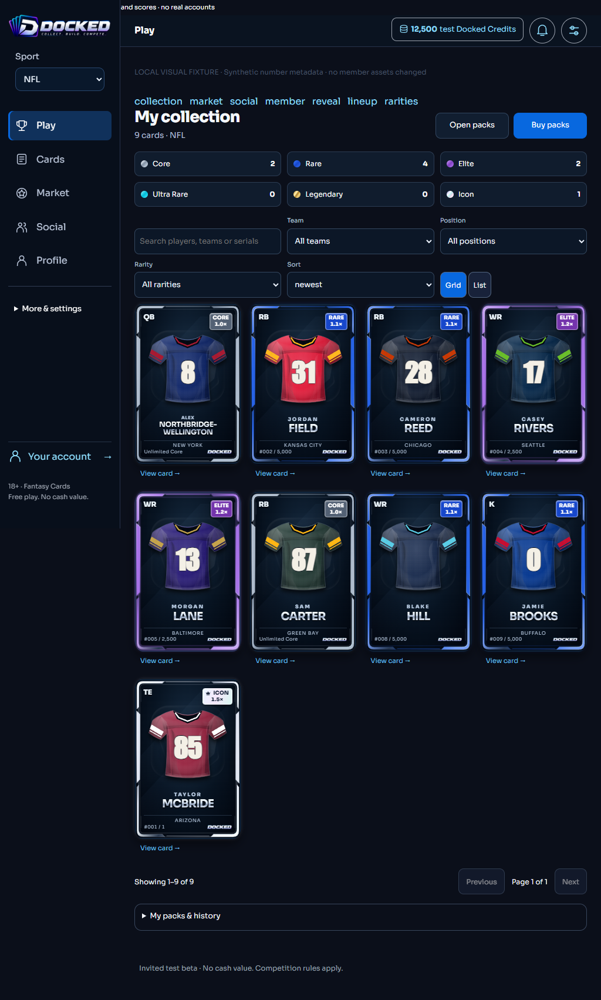
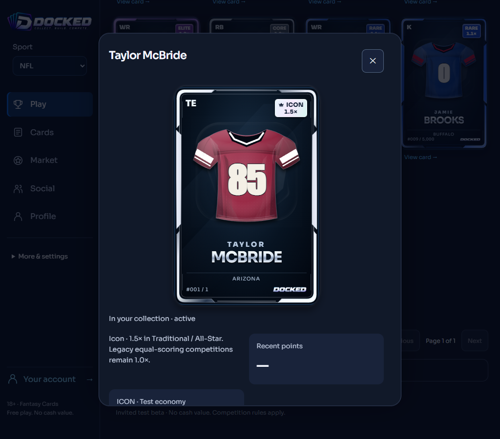
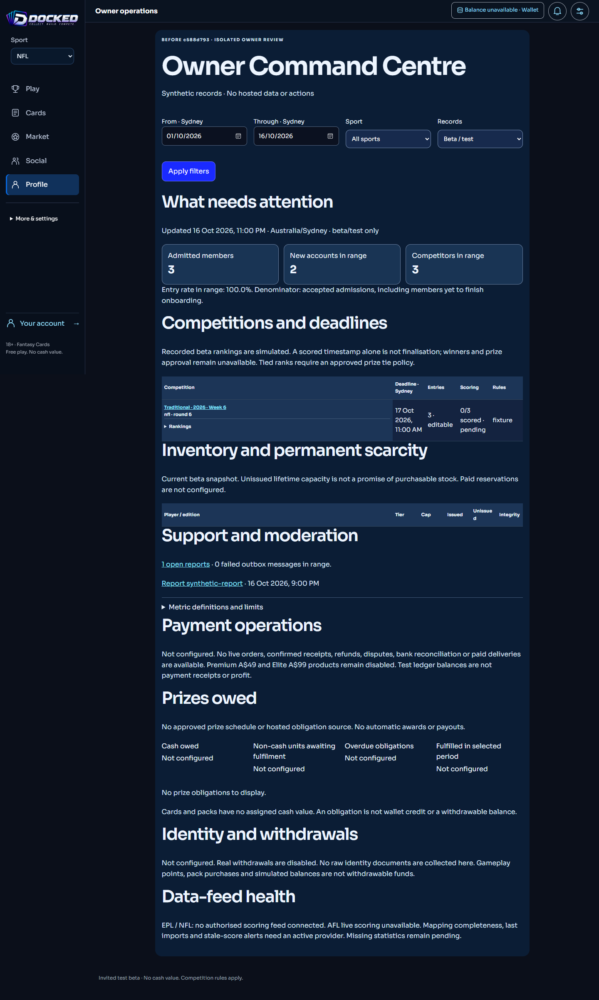
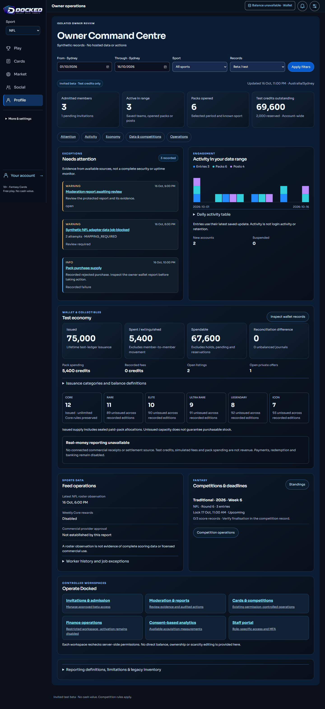
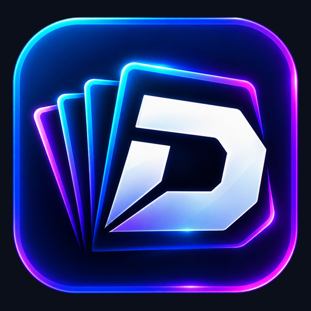
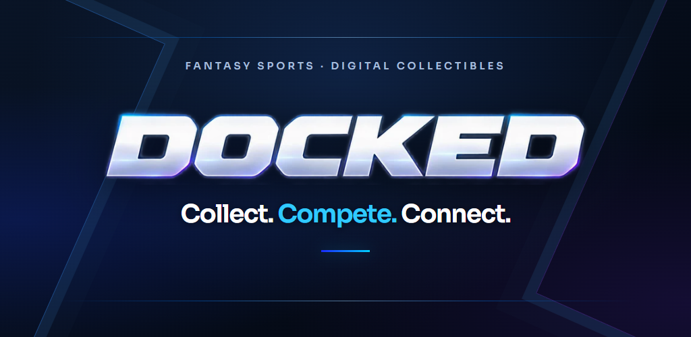

Phone viewport
SYNTHETIC REVIEW · 412 × 824


phone-collection-SYNTHETIC-REVIEW.png
Synthetic fixtures · local browser screenshots · not approved for upload
Original artwork and rendered interface retained. Crops are recorded in the provenance index. These are not physical Android screenshots. QA-only navigation and synthetic content must be replaced by genuine approved-build captures before submission.
SYNTHETIC REVIEW · 412 × 824

phone-collection-SYNTHETIC-REVIEW.png
SYNTHETIC REVIEW · 412 × 824

phone-post-preview-SYNTHETIC-REVIEW.png
SYNTHETIC REVIEW · 1024 × 1703

tablet-collection-SYNTHETIC-REVIEW.png
SYNTHETIC REVIEW · 1024 × 900

tablet-detail-SYNTHETIC-REVIEW.png
Synthetic owner fixture, not customer marketing.

Synthetic owner fixture, not customer marketing.


Unmodified. Store icon design review remains required. Feature graphic prepared below for owner review.

1024 × 500. Existing wordmark preserved. Provenance. Not published or store-approved.